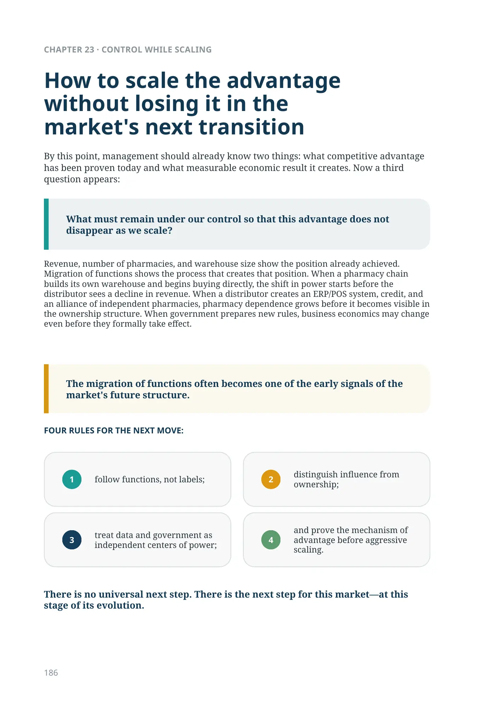
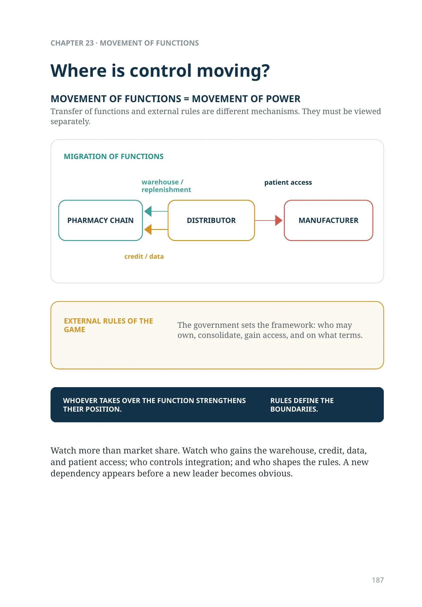
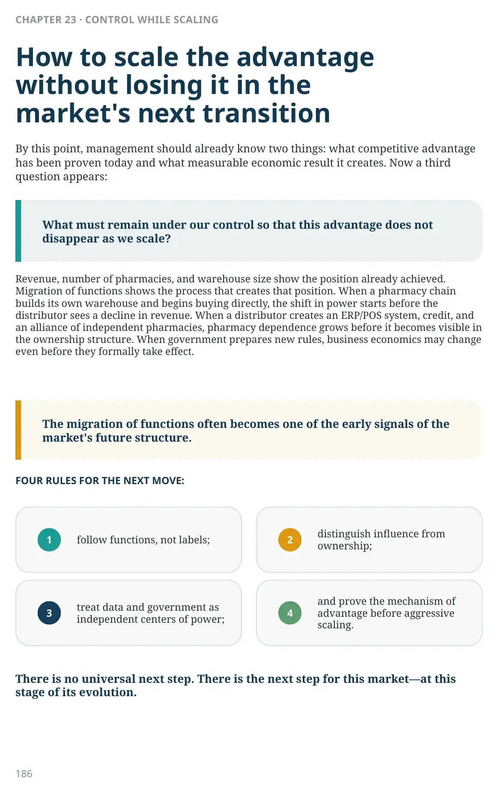

What must remain under our control?

How to scale the advantage without losing it in the market's next transition
By this point, management should already know two things: what competitive advantage has been proven today and what measurable economic result it creates. Now a third question appears:
What must remain under our control so that this advantage does not disappear as we scale?
Revenue, number of pharmacies, and warehouse size show the position already achieved. Migration of functions shows the process that creates that position. When a pharmacy chain builds its own warehouse and begins buying directly, the shift in power starts before the distributor sees a decline in revenue. When a distributor creates an ERP/POS system, credit, and an alliance of independent pharmacies, pharmacy dependence grows before it becomes visible in the ownership structure. When government prepares new rules, business economics may change even before they formally take effect.
The migration of functions often becomes one of the early signals of the market's future structure.
There is no universal next step. There is the next step for this market—at this stage of its evolution.
Where is control moving?
Transfer of functions and external rules are different mechanisms. They must be viewed separately.
MIGRATION OF FUNCTIONS
- DISTRIBUTOR → PHARMACY CHAIN: warehouse / replenishment
- DISTRIBUTOR → PHARMACY CHAIN: credit / data
- DISTRIBUTOR → MANUFACTURER: patient access
Watch more than market share. Watch who gains the warehouse, credit, data, and patient access; who controls integration; and who shapes the rules. A new dependency appears before a new leader becomes obvious.
warehouse / replenishment
credit / data
patient access
EXTERNAL RULES OF THE GAME
The government sets the framework: who may own, consolidate, gain access, and on what terms.